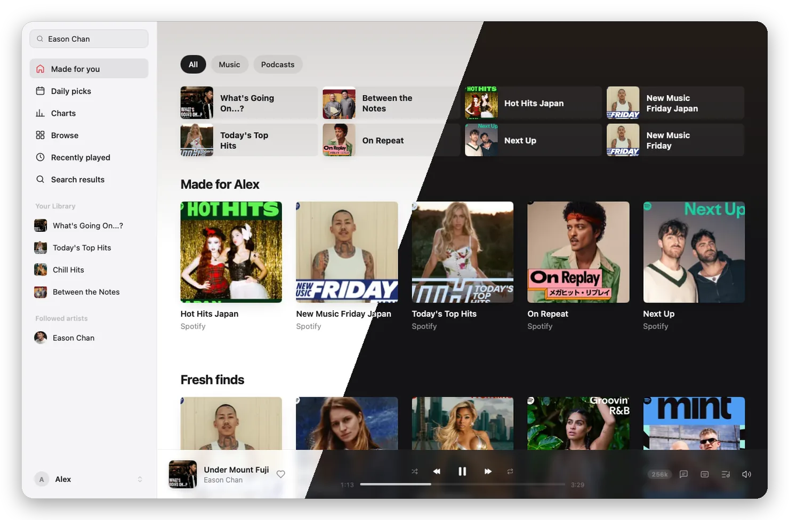
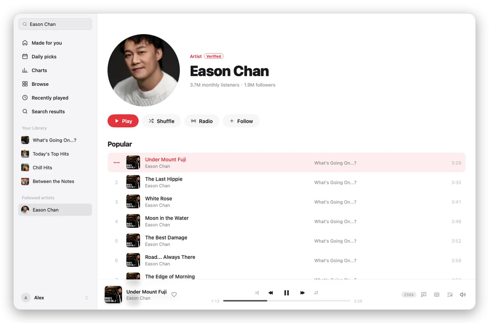
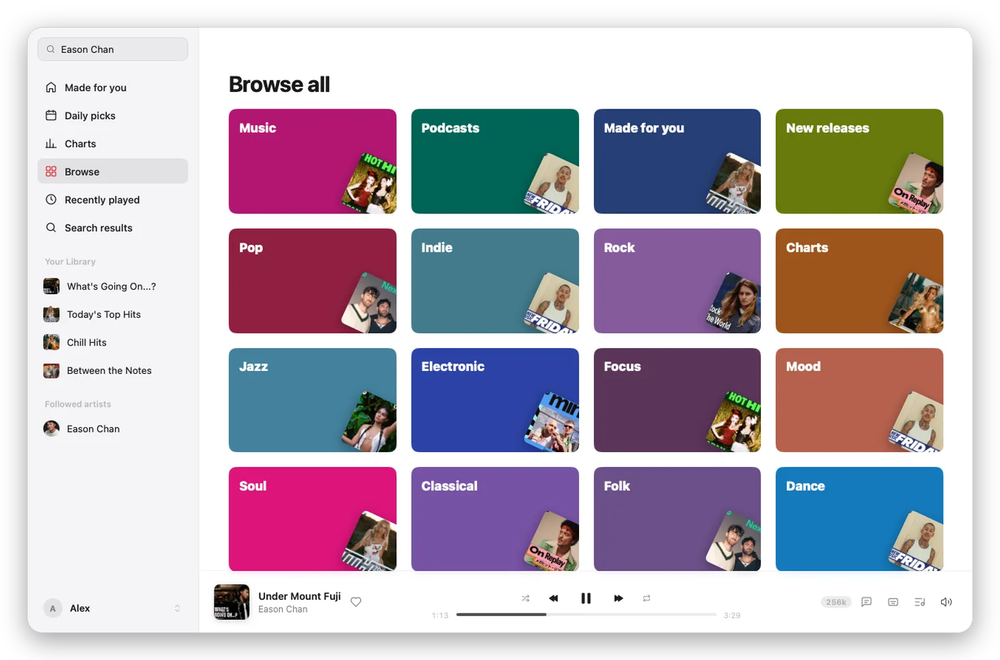
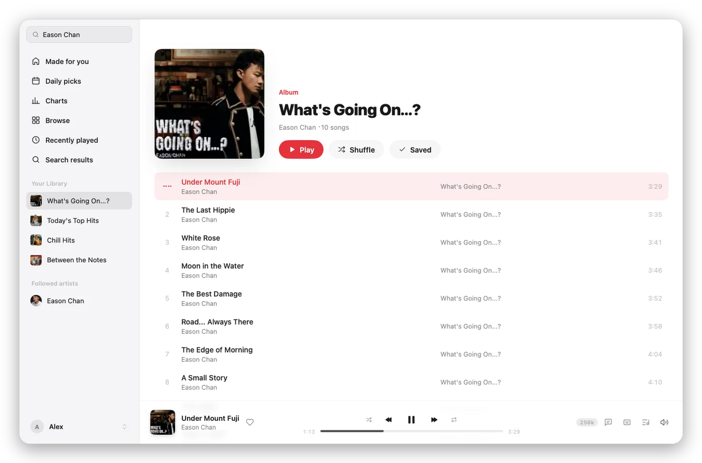
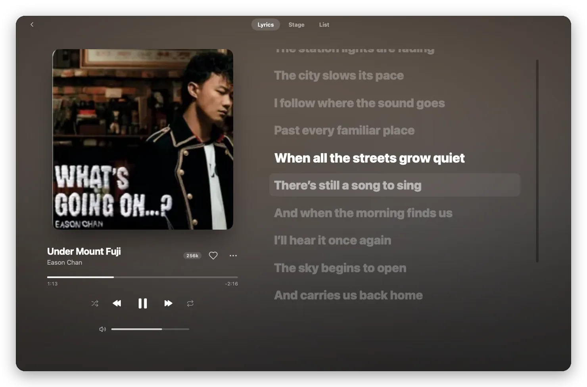
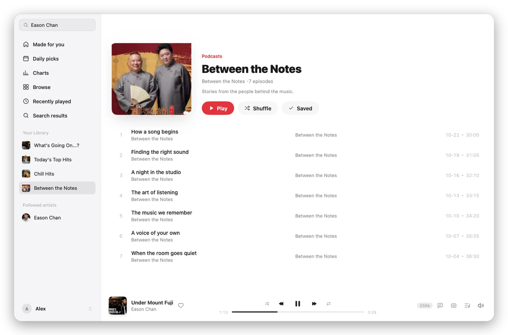
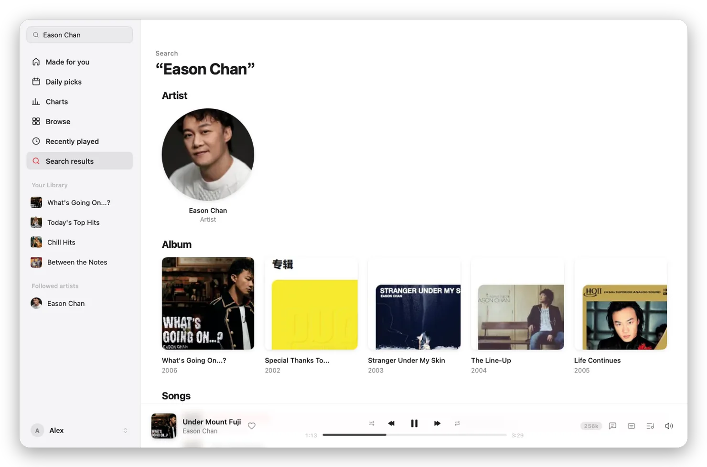
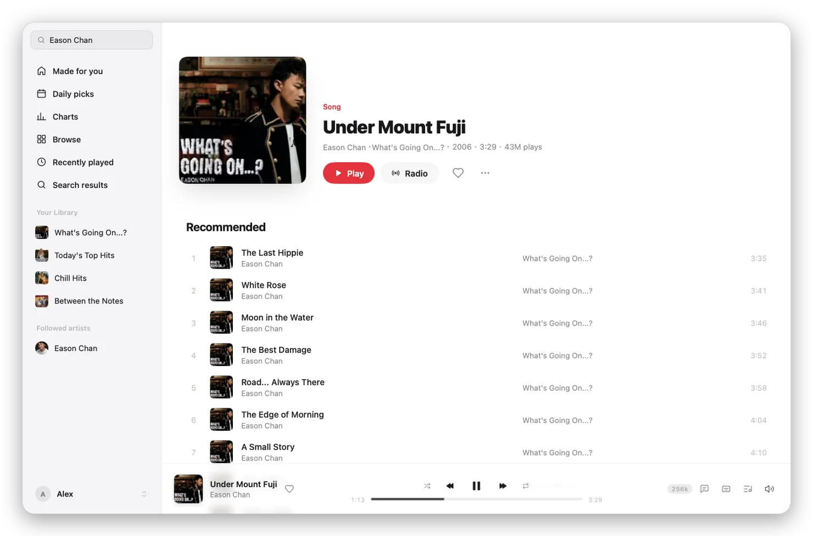
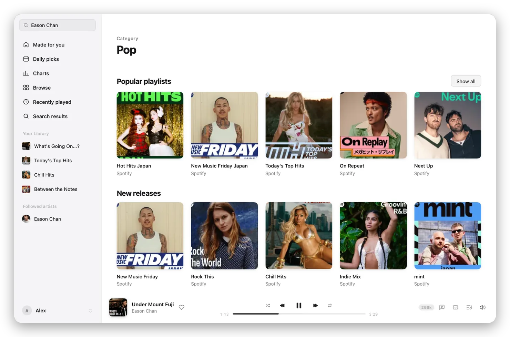
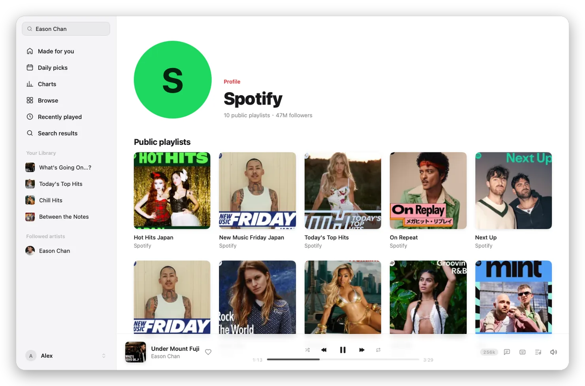

MYSPOTIFY · NATIVE GO (NO ELECTRON) · OPEN SOURCE · WINDOWS / MACOS
Spotify, in a real desktop app
A native Go + MyGo interface under 10 MB, with floating desktop lyrics, music videos, video podcasts, equalizer and Spotify Connect. Free accounts play whole songs, and you can look around before signing in.
An open-source personal project (AGPL-3.0) with no ties to Spotify. Using it could get your account restricted. Read the risks first

< 10 MBto download: unzip it, or drag it to Applications, and it runs
≈ 190 MBin use while browsing, plus a decryption process of about 60 MB while playing
1–2 sfrom a cold start to content, with no sign-in first
0analytics or tracking: settings and history stay on your computer





Feels like desktop software.
The interface is drawn natively by MyGo, not a web page in a frame. A sidebar, full-screen Now Playing, a rhythm stage, macOS notch player, system media keys, global shortcuts, light and dark themes. Closing the window keeps the music going from the tray.
Look around without signing in.
Search, the home page, playlists, albums and artists are there the moment it opens: like the web player, MySpotify gets itself a guest identity. Sign in when you want to listen.
Whole songs on free, 256k on Premium.
You sign in on Spotify's own page. The DRM module built into your system's web component decrypts the audio, the same path as listening in a browser: 128k AAC on free accounts, or 256k AAC for Premium under Settings.
Floating desktop lyrics that actually scroll.
What Spotify lacks comes from NetEase Cloud Music and LRCLIB, matched strictly by title and length. Float the current line above every window on macOS and Windows with cover-colored highlight, click-through lock and hide-on-pause. Explore desktop lyrics
Music videos, too.
Songs with a video wear a small tag: click it to play, or switch from the player bar at any time. Watch in place of the cover, filling the window or full screen, with the current lyric below and [ / ] 0.5 s offset tuning.
Podcasts to hear, watch and read along.
Video podcasts show their picture with one click, with pitch-preserved 0.5×–3× playback speed. The transcript scrolls like lyrics, lighting up word by word, and clicking a sentence jumps to it.
TRACKLIST
Most of what Spotify has is here
Plays
1
HomeSpotify's own sections and titles, filtered by music or podcasts
2
Daily mixes and chartsFinds Made for You playlists reliably
3
Browse all categories
4
Playlists and albumsEdit playlists, filter large playlists instantly with ⌘/Ctrl+F, auto-sync across devices
5
Artist and song pagesFull grouped song credits, play counts and similar songs
Lossless audioOnly in the official apps. 256k is for Premium accounts, under Settings › Audio quality
Offline downloadsNeeds Premium and the official client
Jam, DJNeeds Premium or the phone app
Word-by-word lyricsSpotify gives the web player timing per line only
Some podcasts on macOSSpotify-hosted shows with Widevine-only audio and no public RSS feed
Stable Intel Mac / Linux supportExperimental installers (Qt WebEngine default on Linux); Intel awaits hardware verification
Friend activity, local files, BlendNot built yet
COMPARISON
MySpotify vs official desktop app & web player
An honest side-by-side look: MySpotify focuses on native speed, low RAM, floating desktop lyrics and privacy, while the official client provides lossless audio, offline downloads and official account support. Read the full comparison (including Spicetify & TUI clients)
Attribute
MySpotify (Go / MyGo)
Official Spotify Desktop
Spotify Web Player
UI Engine
Native Go + MyGo (not Electron)
CEF (bundled Chromium engine)
Browser tab
Download Size
< 10 MB
~150–250 MB
None
Typical RAM Usage
~190 MB browsing (+~60 MB playing)
Typically 500 MB – 1 GB+
Varies with browser
Floating Desktop Lyrics
Built-in (macOS & Windows, click-through lock)
No
No
Lyrics Fallback & Translation
Spotify + NetEase + LRCLIB, Chinese translation
Spotify catalog only
Spotify catalog only
Equalizer & Crossfade
6-band curve EQ (22 presets) & 0–12s crossfade on Windows
Yes
No
Audio Quality & Offline
128k free / 256k Premium AAC; online only
Higher quality & offline downloads (Premium)
128k / 256k AAC; online only
Telemetry & Support
Zero telemetry, open source; unofficial account risk
Official support, includes telemetry
Official support, ads on free tier
SCREENS
A look around the app
Screenshots use sample data. Change the app language anytime in Settings › Appearance › Language (English, Simplified Chinese, Italian or System).




BEHIND THE SCENES
The parts you won't see
Spotify Connect & Google Cast (experimental)
Your computer appears in Spotify's device list on your phone, and you can also wake and cast directly to Google Cast / Nest speakers and multi-room groups on your local network.
Equalizer & crossfade on Windows
Shape sound with a draggable 6-band curve equalizer and 22 presets (keyboard accessible), plus 0–12 second crossfade between tracks under playback settings.
macOS notch player & AppleScript
Check and control playback from the macOS notch mini-player, or query track metadata via read-only AppleScript compatible with Music.app for Raycast and status bars.
Errors don't leave it stuck
An expired license gets a new identity and a retry. On 429 rate limits, 502 server errors or dropped networks, it waits and resumes cleanly where it left off.
No downloading a song twice
Played songs stay cached locally as encrypted segments so replays start faster and save data. Choose a custom cache folder and size limit, or clear it in one click.
Your data stays on your computer
Settings and history are local, and renewal cookies are encrypted via Windows DPAPI or macOS Keychain. It connects only to Spotify, Gravatar, NetEase/LRCLIB for lyrics, and GitHub for updates.
READ THIS FIRST
Before you use it
It isn't an official client
It uses the web player's internal, undocumented interfaces. When Spotify changes them, it can break.
Your account is at risk
Spotify's terms don't allow third-party programs to access its service, so your account could be restricted or banned. Use only your own, and nothing commercial.
It plays no ads
The web player's free tier has ads; MySpotify doesn't play them. Spotify likely won't like that. If you mind, use the official client or subscribe to Premium.
It doesn't crack DRM
Your system's Widevine or FairPlay module does the decrypting, and the program never gets the keys or the decrypted content. Every play needs a license, so it can't work offline.
Apple silicon / Intel (experimental, hardware testing pending)
Open the dmg and drag MySpotify to Applications.
The app isn't notarized by Apple, so the first launch is blocked: go to System Settings › Privacy & Security and click Open Anyway at the bottom. Or run xattr -dr com.apple.quarantine /Applications/MySpotify.app in Terminal.
Click “Sign in to Spotify” and sign in on Spotify's own page.
Install updates from Settings › About with “Update and restart.” Experimental Linux .deb / .tar.gz builds (Qt WebEngine default) are documented in LINUX.md.
Space Play / pause⌘/Ctrl ← → Previous / next⌘/Ctrl D Like⌘/Ctrl L Now Playing⌘/Ctrl F Search / Filter playlist
FAQ
Questions
How is MySpotify different from the official Spotify desktop app?
MySpotify renders its interface natively with Go and MyGo rather than shipping a full Chromium/Electron shell. The installer is under 10 MB and uses about 190 MB of RAM while browsing (plus ~60 MB for the system DRM playback process). It adds built-in floating desktop lyrics, multi-source lyrics fallback and zero telemetry, while the official app offers lossless audio, offline downloads, Jam/DJ and official account safety.
Does MySpotify have floating desktop lyrics on macOS and Windows?
Yes. Click Desktop lyrics in the player bar on macOS or Windows to float the current lyric line above all windows. Words light up in the album cover's accent color, with click-through lock mode, optional hide-on-pause, customizable font size and colors, and a global shortcut toggle.
Is MySpotify safe? Does it crack DRM or collect account data?
MySpotify does not crack DRM. Decryption runs inside your operating system's WebView2 Widevine (Windows) or WebKit FairPlay (macOS) module, so the app never sees keys or decrypted streams. You sign in on Spotify's official login page, renewal cookies are encrypted via Windows DPAPI or macOS Keychain, and there is zero telemetry.
What audio quality is supported for free vs Premium Spotify accounts?
Free accounts play full songs at 128k AAC via the same DRM path as Spotify's web player, and you can browse without signing in. Premium accounts can enable High quality (256k AAC) under Settings › Audio quality; if a free account enables 256k and Spotify refuses the license, it automatically falls back to 128k. Lossless audio requires the official app.
Why does a song say it can't be played right now?
It isn't available in your region, or Spotify refused the license (403). If the web player can't play it either, it's a licensing or regional restriction.
The player bar says Spotify is rate limiting. What do I do?
Nothing. MySpotify waits as long as Spotify asks, then resumes where it was. Starting songs over and over in a short time is what triggers rate limiting.
If songs are cached, why does it still need the network?
The cache stores encrypted audio segments as delivered by the CDN, and decrypting them requires a fresh license from Spotify on each play. Caching saves bandwidth and reduces buffering, and you can choose the cache folder and size limit in settings.
How do I set a proxy or fully quit the app?
It follows the system proxy by default, or you can enter 127.0.0.1:7890, http://…, https://… or socks5://… under Settings › Network › Proxy. Closing the window sends MySpotify to the tray; right-click the tray icon and choose Quit MySpotify to exit completely.